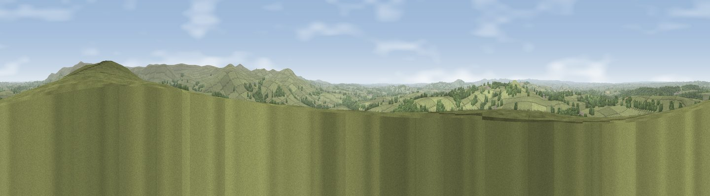

Viewpoint near Mary Tavy
#4023 in England · top 5% of its area beats it · near Mary TavyWhere it is
The exact computed spot (SX 50338 81175). Click the marker for map links.
The view, rendered

A 360° render of this exact spot computed from the terrain model, tree cover and land cover — summer colours, afternoon light, calibrated against photographs of famous viewpoints. Real trees, hedges and buildings will differ in detail.
The panorama
Grey silhouette: terrain skyline in each direction (720 bearings, Earth curvature and refraction included). Dashed green: skyline with trees (+15 m) and buildings (+8 m) as obstacles. Blue strip: how far the ground is visible on each bearing.
Where the view opens
Wedge length = distance to the farthest visible ground on that bearing (vegetation-aware). Rings at 10, 25 and 50 km.
What fills the view
88% grassland · 11% woodland · 1% cropland
Angular shares of the visible panorama (visual magnitude), not map area. Landscape diversity 0.19 (0–1 Shannon).
Key numbers
More beautiful places nearby
The staircase of upgrades: each row has a higher view potential than everything closer. Driving times are estimates from straight-line distance, calibrated against real road routing — check an actual route before setting out.
| Place | Direction | Drive | Score |
|---|---|---|---|
| Brent Tor | WSW · 3 km | ~8 min | 73.4 |
| White Tor | ESE · 5 km | ~10 min | 74.4 |
| Cox Tor | SSE · 6 km | ~12 min | 75.9 |
| Viewpoint near Princetown | SE · 7 km | ~15 min | 77.0 |
| Great Links Tor | NE · 7 km | ~15 min | 77.8 |
| Yes Tor | NE · 12 km | ~22 min | 78.5 |
| Viewpoint near Dousland | SSE · 12 km | ~23 min | 81.0 |
| Viewpoint near Lee Moor | SSE · 19 km | ~33 min | 82.7 |
50.61104, -4.11662 · source: screening · position refined by local search. Computed location — check access rights before visiting.